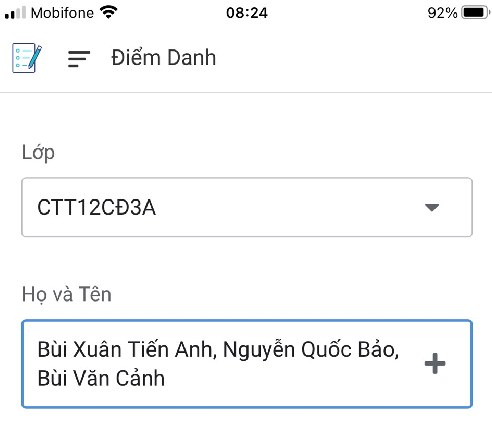
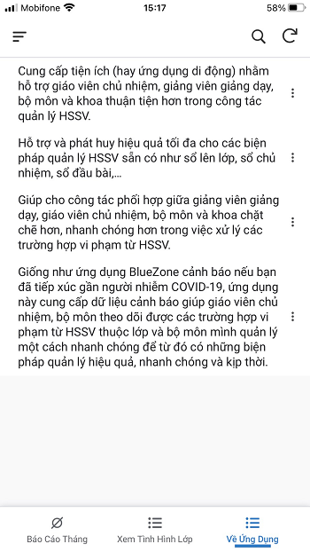

Chức năng dành cho giảng viên và giáo viên chủ nhiệm tại bộ môn
Tải và cài đặt ứng dụng
Tải AppSheet (tại Google Play trên Aandroid hay Apple Store trên iOS)
Hình 1: Tải ứng dụng AppSheet
Mở AppSheet và đăng nhập bằng Google
Hình 2: Đăng nhập ứng dụng AppSheet qua Google
Tài khoản đăng nhập (chỉ chia sẻ các thầy cô giảng dạy trong bộ môn ):
Hình 3: Giao diện đăng nhập AppSheet qua Google
Khi đăng nhập thành công ứng dụng sẽ có giao diện
Hình 4: Giao diện ban đầu khi vừa đăng nhập AppSheet thành công
Nhấp chuột vào biểu tượng bên trái dòng chữ Share with me
Hình 5: Mở cửa sổ thực đơn AppSheet
Chọn Created by me từ cửa sổ hiện ra:
Hình 6: Chọn tính năng Created by me
Sẽ xuất hiện 2 chức năng chính của ứng dụng:
- Bộ môn Tin học: Điểm Danh Bộ Môn Tin và GVCN Bộ Môn Tin
- Bộ môn Điện: Điểm Danh Bộ Môn Điện và GVCN Bộ Môn Điện
- Bộ môn Điện Lạnh: Điểm Danh Bộ Môn Điện Lạnh và GVCN Bộ Môn Điện Lạnh
Giả sử đăng nhập tài khoản bộ môn Tin giao diện ứng dụng:
Hình 7: Giao diện ứng dụng hỗ trợ điểm danh và chủ nhiệm
Chức năng điểm danh và thống kê vi phạm dành cho giáo viên giảng dạy
Hướng dẫn minh họa áp dụng cho giảng viên và giáo viên chủ nhiệm tại bộ môn Tin học, các bộ môn khác tương tự.
Giảng viên giảng dạy, nếu điểm danh theo buổi học thì chọn Điểm Danh Bộ Môn Tin để mở giao diện:
Hình 8: Giao diện giới thiệu ứng dụng
Như hình trên, giao diện gồm 4 mục như sau:
- Về Ứng Dụng: Xuất hiện mặc định giới thiệu vài nét cơ bản về ứng dụng;
- ABC: Giúp giảng viên đánh giá A, B, C theo buổi học, môn học, lớp học mình phụ trách;
- Điểm Danh: Giúp giảng viên điểm danh HSSV theo buổi, môn, lớp mình phụ trách;
- Vi Phạm: Giúp giảng viên theo dõi tình hình vi phạm HSSV theo môn học và lớp mình phụ trách để có cơ sở cho việc thiết lập danh sách thi kết thúc môn hay những hình thức đánh giá khác.
Sau khi xem thông tin ứng dụng tại mục Về Ứng Dụng, giảng viên giảng dạy chọn các tính năng Điểm Danh, ABC hay Vi Phạm. Nếu giảng viên chọn mục ABC xuất hiện giao diện:
Hình 9: Giao diện ABC
Chú ý: Lúc này, nếu giảng viên nhấn vào nút Cancel hay nút bên trái chữ ABC thì sẽ thoát giao diện ABC này và sẽ đến giao diện Về Ứng Dụng. Lúc này có thể chọn lại mục ABC hay các mục khác. Nhập thông tin với lưu ý vì số giờ A, B hay C không quá 4 nên nếu nhập số âm hay lớn hơn 4 sẽ báo lỗi nhập như sau:
Hình 10: Giao diện khi nhập thông tin ABC lỗi
Nhập xong thông tin nhấn nút Save để lưu hoặc nhấn Cancel để hủy thông tin vừa nhập. Sau khi nhấn Save (hay Cancel), giao diện Về Ứng Dụng xuất hiện trở lại. Đối với trường hợp nhấn Save, để đề phòng kết nối Internet không ổn định đảm bảo dữ liệu vừa nhập sẽ được lưu đến cơ sở dữ liệu, giảng viên cần nhấn nút gốc phải trên giao diện Về Ứng Dụng:

Hình 11: Cập nhật dữ liệu ứng dụng
Nếu giảng viên chọn mục Điểm Danh xuất hiện giao diện:
Hình 12: Giao diện Điểm Danh
Chú ý: Lúc này, nếu giảng viên nhấn vào nút Cancel hay nút bên trái chữ Điểm Danh thì sẽ thoát giao diện Điểm Danh này và sẽ đến giao diện Về Ứng Dụng. Lúc này có thể chọn lại mục Điểm Danh hay các mục khác. Mục Lớp chứa tất cả các lớp CĐ và TC hiện có tại bộ môn. Nhấn vào ô Lớp sẽ xuất hiện giao diện
Hình 13: Giao diện danh sách Lớp
Chọn Lớp và nhấn Done để trở lại giao diện Điểm Danh. Khi chọn Lớp sẽ xuất hiện danh sách HSSV tương ứng của lớp đó trong mục Họ và Tên
Hình 14: Giao diện Điểm Danh xuất hiện mục Họ và Tên sau khi chọn Lớp
Danh sách Họ và Tên cho phép giảng viên chọn nhiều HSSV cùng lúc nếu các HSSV này cùng thời điểm và hình thức vi phạm
Hình 15: Giao diện Họ và Tên
Nhấn Select All chọn tất cả HSSV trong danh sách mặc dù điều này hiếm khi xảy ra. Chọn Done để hoàn tất việc chọn sẽ trở lại giao diện Điểm Danh như sau:

Hình 16: Giao diện sau khi chọn Họ và Tên HSSV vi phạm
Mục MĐ/MH chứa tất cả các môn học và mô đun của nghề đào tạo tương ứng bộ môn. Ở đây là chương trình Cao đẳng vì bao hàm cả chương trình Trung cấp.
Riêng bộ môn Điện có hai nghề là Điện Công nghiệp và Điện Dân dụng với 2 chương trình đào tạo khác nhau nên chương trình nào xuất hiện phụ thuộc vào việc chọn lớp của giảng viên. Nếu mã lớp được chọn có 3 chữ cái đầu tiên là ĐCN (ví dụ ĐCN13CĐ3A) thì chương trình Điện Công nghiệp sẽ xuất hiện, nếu 3 chữ cái đầu tiên là ĐDD (ví dụ ĐDD14TC4A) thì chương trình Điện Dân Dụng sẽ xuất hiện.
Kế tiếp, giảng viên sẽ chọn Ngày, Buổi (Sáng hoặc Chiều) và hình thức vi phạm trong mục Vi Phạm:
Hình 17: Giao diện mục Vi Phạm
Mục Vi Phạm giúp giảng viên theo dõi tình hình vi phạm HSSV theo môn học (MĐ/MH) và lớp mình phụ trách để có cơ sở cho việc thiết lập danh sách thi kết thúc môn hay những hình thức đánh giá khác. Giao diện Vi Phạm:
Hình 18: Giao diện chức năng Vi Phạm
Các giảng viên có thể thống kê vi phạm của HSSV theo Lớp và MĐ/MH theo 2 bước:
Bước 1: Nhấn nút  bên dưới màn hình để đến giao diện cập nhật thông tin:
bên dưới màn hình để đến giao diện cập nhật thông tin:
Hình 19: Giao diện lọc thông tin xem tình hình vi phạm theo MĐ/MH
Chọn khoảng thời gian (Ngày Bắt Đầu và Ngày Kết Thúc), lớp và MĐ/MH. Sau khi nhập thông nhấn nút Save để lưu hay nhấn nút Cancel để hủy. Đối với trường hợp nhấn Save, để đề phòng kết nối Internet không ổn định đảm bảo dữ liệu vừa nhập sẽ được lưu đến cơ sở dữ liệu, giảng viên cần nhấn nút gốc phải trên giao diện Vi Phạm.
Bước 2: Sau khi nhấn nút Save sẽ trở lại giao diện Vi Phạm. Tiếp đến, giảng viên nhấn vào nút THỐNG KÊ VI PHẠM THEO MĐ/MH để mở giao diện HT – RL Tháng. Nếu không có thông tin gì thì giao diện như sau:
Hình 20: Giao diện không có dữ liệu về tình hình vi phạm theo MĐ/MH
Nếu có thông tin:
Hình 21: Giao diện biểu đồ thống kê về tình hình vi phạm theo MĐ/MH
Biểu đồ trên thống kê các trường hợp vi phạm bao gồm Hút Thuốc, Vắng Có Phép và Đi Trễ. Giảng viên có thể nhấn vào các vùng màu để xem thông tin về HSSV vi phạm tương ứng.
Lưu ý rằng, vì giảng viên có thể chọn nhiều HSSV có cùng hình thức vi phạm (ví dụ Vắng Có Phép) nên các số liệu trên biểu đồ chỉ thể hiện số lần giảng viên thực hiện điểm danh tương ứng với hình thức vi phạm. Ví dụ, từ biểu đồ chúng ta có thể thấy 1 trường hợp Vắng Không Phép (màu xanh lá) và để xem cụ thể HSSV nào vi phạm trường hợp này, nhấn vào vùng màu xanh lá:
Hình 22: Giao diện chi tiết thống kê mức 1 về tình hình vi phạm theo MĐ/MH
Vì chỉ có 1 trường hợp tương ứng 1 lần điểm danh của giảng viên nên chỉ có 1 hàng liệt kê HSSV vi phạm. Giảng viên có thể xem chi tiết hơn bằng cách nhấn chuột vào hàng thông tin (hàng chứa dữ liệu):
Hình 23: Giao diện chi tiết thống kê mức 2 về tình hình vi phạm theo MĐ/MH
Như ví dụ trong trường hợp này, 3 em sinh viên Tiến Anh, Quốc Bảo và Văn Cảnh cùng vắng có phép trong buổi sáng học môn Tin học ngày 14/4/2021.
Lúc này, giảng viên có thể trở lại giao diện điểm danh, xem vi phạm của HSSV hay đánh giá ABC bằng cách nhấn vào các mục Vi Phạm, Điểm Danh hay ABC ở cuối giao diện.
Chức năng theo dõi tình hình lớp dành cho giáo viên chủ nhiệm
Chú ý: Chức năng này chỉ cho phép giáo viên chủ nhiệm xem thông tin vi phạm lớp mình nhưng không được chỉnh sửa thông tin. Muốn chỉnh sửa cần thông qua giảng viên giảng dạy.
Nếu giảng viên đang ở chức năng Điểm Danh Bộ Môn Tin thì cần trở lại giao diện chính của ứng dụng AppSheet theo các bước:
Trở lại giao diện Về Ứng Dụng
Hình 24: Giao diện giới thiệu ứng dụng
Nhấn nút ở góc trái trên giao diện gần chữ Về Ứng Dụng để mở thực đơn ứng dụng:
Hình 25: Giao diện thực đơn ứng dụng
Chọn mục App Gallery sẽ trở lại giao diện chính AppSheet:
Hình 26: Giao diện ứng dụng điểm danh và chủ nhiệm
Kế tiếp chọn chức năng GVCN Bộ Môn Tin. Giống như Điểm Danh Bộ Môn Tin, giao diện mặc định xuất hiện vẫn là Về Ứng Dụng. GVCN Bộ Môn Tin có hai chức năng chính là Xem Tình Hình Lớp:
Hình 27: Giao diện các lớp
Và Báo Cáo Tháng:
Hình 28: Giao diện báo cáo tháng
Tại mục Báo Cáo Tháng thầy cô có thể rút trích thông tin vi phạm của HSSV lớp mình chủ nhiệm bằng
cách nhấn nút để đến giao diện cập nhật thông tin:
Hình 29: Giao diện lọc thông tin báo cáo tháng
Nhấn nút Save để lưu thông tin hay nút Cancel để hủy thông tin sẽ trở lại giao diện Báo Cáo Tháng.
Đối với trường hợp nhấn Save, để đề phòng kết nối Internet không ổn định đảm bảo dữ liệu vừa nhập sẽ được lưu đến cơ sở dữ liệu, giảng viên cần nhấn nút gốc phải trên giao diện Báo Cáo Tháng. Kế tiếp nhất nút để xem thông tin về lớp tại một khoảng thời gian nào đó (từ Ngày Bắt Đầu đến Ngày Kết Thúc) sẽ xuất hiện giao diện như sau:
Hình 30: Giao diện thông tin báo cáo tháng
Giao diện này cung cấp chi tiết thông tin vi phạm của HSSV và tổng số giờ A, B, C trong khoảng thời gian cụ thể (từ Ngày Bắt Đầu đến Ngày Kết Thúc) của lớp được chọn để làm cơ sở đánh giá và báo cáo tháng từ giáo viên chủ nhiệm.
Lưu ý rằng, số liệu thống kê lần này là đếm từng HSSV vi phạm từ dữ liệu được giảng viên giảng dạy điểm danh các giờ dạy của mình. Nếu mục THỐNG KÊ VI PHẠM THEO MĐ/MH trong chức năng Điểm Danh thống kê số lần giảng viên điểm danh (ví dụ 3 trường hợp Vắng Có Phép ở trên chỉ tính 1 lần) thì trong mục Báo Cáo Tháng sẽ đếm cụ thể từng HSSV (trong ví dụ trên là 3). Đây là số liệu quan trọng để GVCN, bộ môn và Khoa đánh giá chính xác tình hình lớp.
Tại mục Xem Tình Hình Lớp, thầy cô nhấn chọn lớp mình chủ nhiệm để xem thông tin tình hình vi phạm HSSV lớp mình chủ nhiệm. Có 2 chức năng:
- Nhấn nút Hôm Nay để xem thông tin HSSV vi phạm ngày hiện tại
- Nhấn nút Tình Hình Lớp để xem thông tin HSSV vi phạm từ đầu kỳ hay năm học (kể từ khi ứng dụng được dùng)
Hình 31: Giao diện chi tiết các lớp
Cập nhật dữ liệu và thoát ứng dụng
Vì ứng dụng được sử dụng bởi nhiều giảng viên nên dữ liệu phải thường xuyên được cập nhật. Dù chọn chức năng GVCN Bộ Môn Tin hay Điểm Danh Bộ Môn Tin, các thầy cô thường xuyên nhấn nút góc phải trên giao diện để cập nhật thông tin.
Để thoát chức năng Điểm Danh hay GVCN, chỉ cần nhấn nút ở góc trái trên giao diện để mở thực đơn ứng dụng và chọn Log out:
Hình 32: Giao diện thực đơn và thoát ứng dụng
Chức năng cán bộ quản lý Khoa
Mỗi giảng viên hay trưởng bộ môn chỉ được xem thông tin về tình hình các lớp (CĐ hay TC) thuộc bộ môn. Cán bộ quản lý Khoa được cấp quyền xem thông tin tất cả các lớp lớp (CĐ hay TC) thuộc Khoa quản lý. Tuy nhiên, cán bộ quản lý khoa chỉ được xem thông tin từ các lớp, không được phép chỉnh sửa thông tin.
Quá trình cài đặt, sử dụng ứng dụng của cán bộ quản lý khoa tương tự các giảng viên bộ môn chỉ khác ở tài khoản đăng nhập:
Cán bộ quản lý khoa được chia sẻ các chức năng GVCN của mỗi bộ môn nên khi lần đầu đăng nhập ứng dụng sẽ xuất hiện giao diện GVCN của một bộ môn nào đó đã được chia sẻ như sau:

Hình 33: Giao diện giới thiệu ứng dụng
Nhấn nút ở góc trái trên giao diện để mở thực đơn ứng dụng và chọn App Gallery hay AppSheet sẽ xuất hiện g iao diện chứa chức năng GVCN từ các bộ môn:
Hình 34: Giao diện ứng dụng chia sẻ mức Khoa
Để ý dòng chữShared with me ở trên vì đây là các tính năng được chia sẻ từ các bộ môn chứ không phải được tạo từ tài khoản này (Create by me). Từ đây, cán bộ quản lý khoa có thể chọn và xem thông tin các lớp thuộc các bộ môn.